25 / 100 — 극단적 공포 · 🔥 극단 공포 = 바닥 매수권(백테스트 F&G≤25 매수 20일 +4~9%)
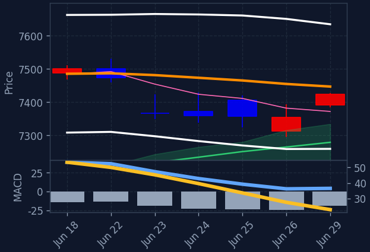
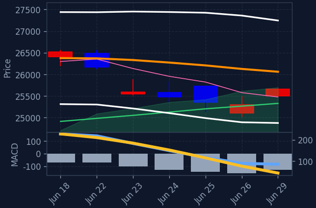
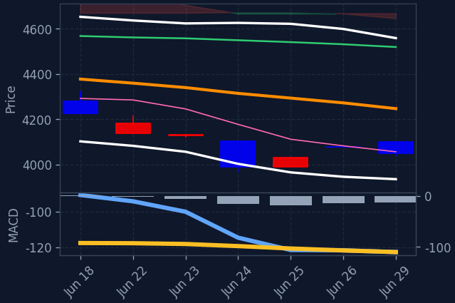
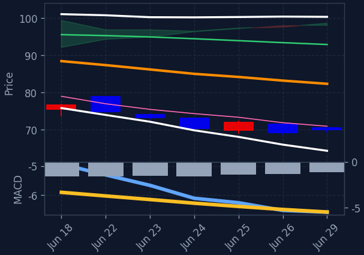
미국 증시는 기술주 강세에 힘입어 전반적으로 상승 마감했습니다. 특히 빅테크와 반도체 관련주들이 두드러진 오름세를 보였으며, 경기소비재 및 2차전지 섹터도 강세를 나타냈습니다. 유가(WTI)는 1.53% 상승한 $70.3를 기록했습니다.
나스닥과 S&P500 지수는 기술주, 특히 빅테크 기업들의 견조한 상승세에 힘입어 강세를 보였습니다. 엔비디아, 마이크론, 브로드컴 등 반도체 관련 기업들의 주가 흐름이 시장의 주목을 받았으며, 긍정적인 실적 발표와 주요 지수 편입 소식 등이 투자 심리를 자극했습니다. 또한, 유가 상승은 에너지 섹터에 긍정적인 영향을 미쳤습니다.
기술/IT 및 반도체 섹터가 각각 1.26%, 1.16% 상승하며 시장을 주도했습니다. 특히 엔비디아, AMD, 브로드컴 등 주요 반도체 기업들의 강세가 두드러졌습니다. 빅테크 기업인 테슬라, 메타, 아마존 등도 3% 이상 상승하며 기술주 전반의 강세를 이끌었습니다. 경기소비재와 2차전지 섹터 역시 1.8% 이상의 상승률을 기록하며 양호한 흐름을 보였습니다. 이러한 미국 기술주 및 반도체 섹터의 강세는 한국 증시에서도 관련 종목들에 대한 주목도를 높일 것으로 예상됩니다.
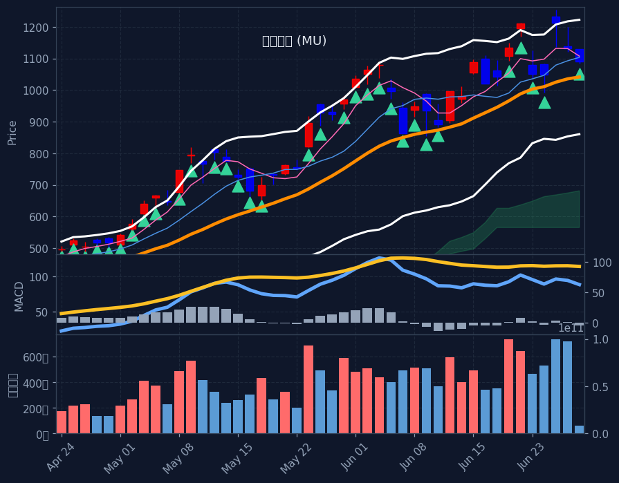
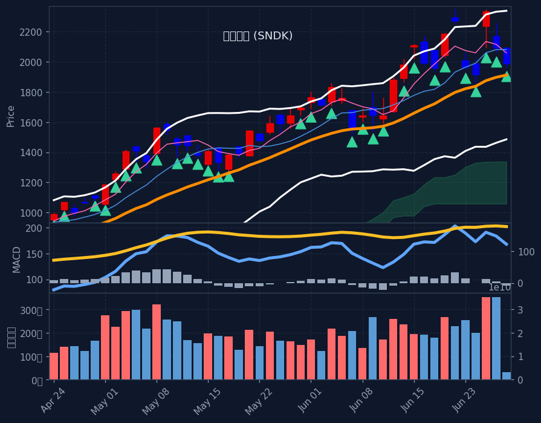
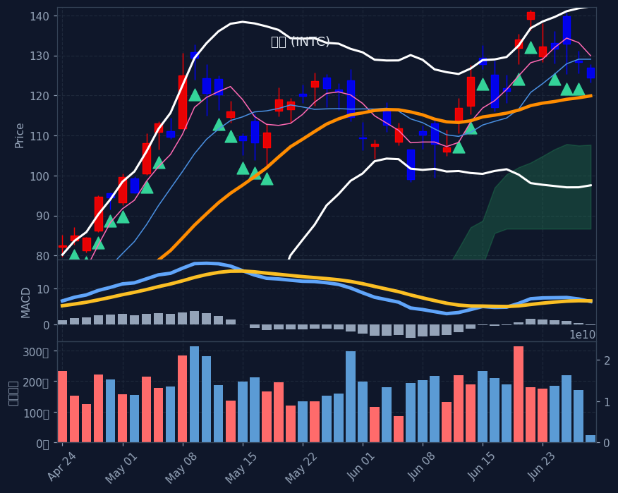
※ S&P500 대상 A/B/C/D 전략별 분류(각 칸 거래대금순). 한 종목이 여러 전략에 잡히면 각 칸에 중복 표기. 백테스트상 기계적 엣지는 약하며 매수 추천이 아닙니다. 판단·책임은 본인.
📅 결제일 6/22~6/26(5거래일) 기준 · 오늘 6/29 기준 약 3일 전 데이터 · T+2 결제 기준(실제 매매는 약 2거래일 전)
💸 한국인 순매수 일평균: +6,261억 (전주 +10,674억 대비 -41.3%) · 5일 총액 +31,304억
※ 예탁결제원(SEIBro) 최근 5거래일 한국인 순매수/순매도 결제금액(T+2) · 6/22~6/26 결제 기준(실제 매매는 약 2거래일 전). 자금이 어디로 유입·유출되는지 참고용.
현재 E(투매 바닥) 신호 없음 — 시장이 바닥권(지수 RSI·공포탐욕 극단)이 아닐 땐 비어있는 게 정상입니다.
※ 투매 바닥(RSI≤30+50선이격+거래량폭증)에서 반등 시작 포착, 4시간봉 RSI도 과매도. 🔥는 지수(나스닥/S&P·코스피)도 RSI<35 동반 바닥(강신호). 떨어지는 칼날 위험 — 매수 추천 아님, 판단·책임 본인.
※ 60일선까지 눌렸다 지지받고 마감한 종목(참고 태그). 백테스트상 다음날 반등 엣지 없음(승률 48~49%·생존편향 포함) 확인됨 — 매수 추천·시그널 아님, 종합점수/Top3에도 미반영. 단순 참고용.
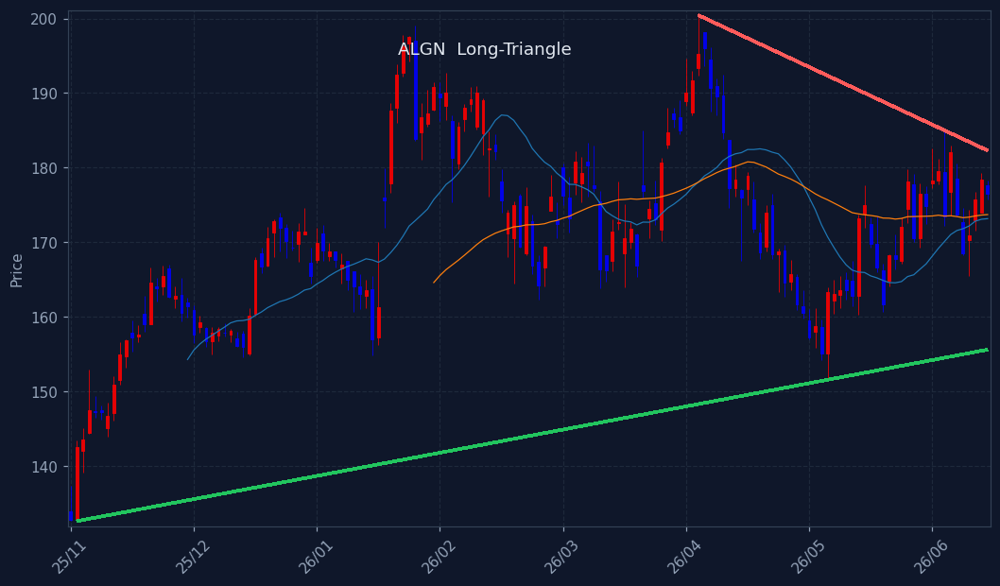
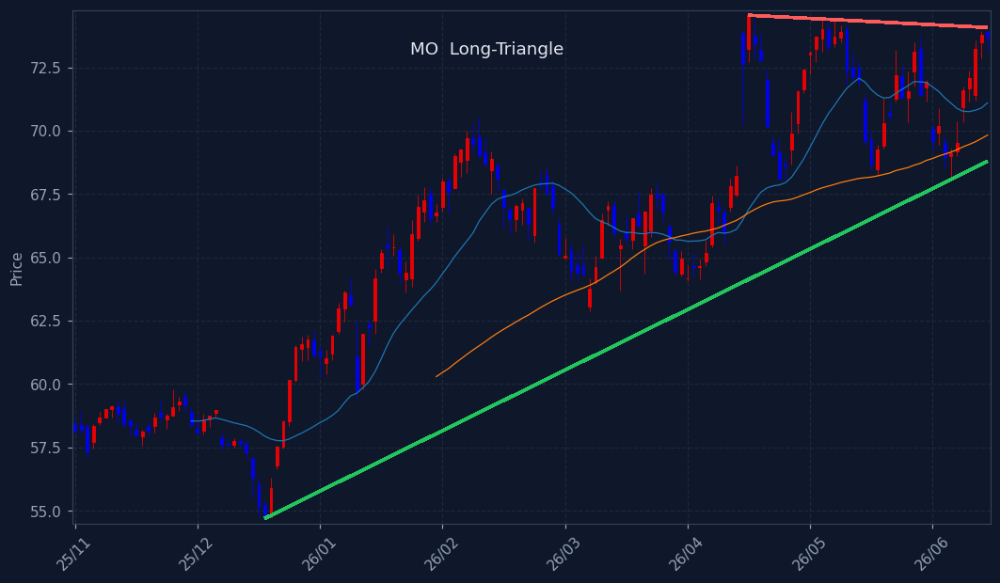
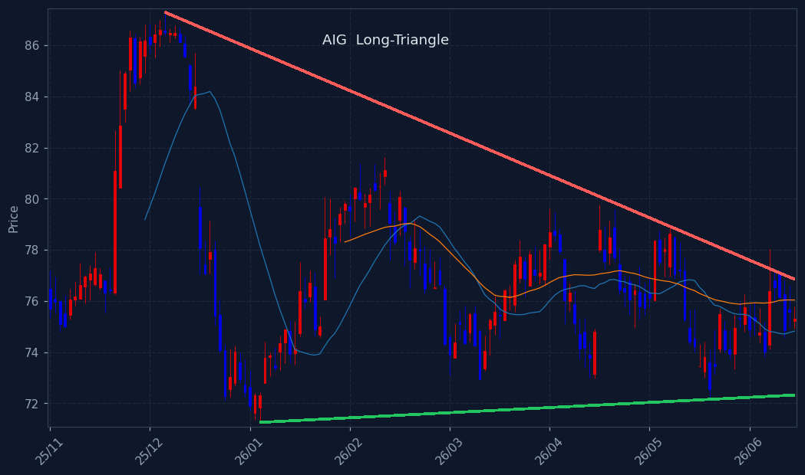
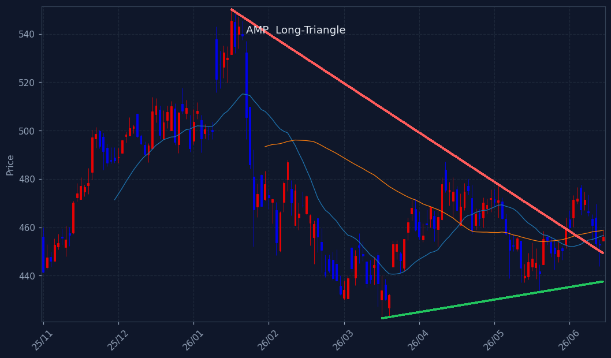
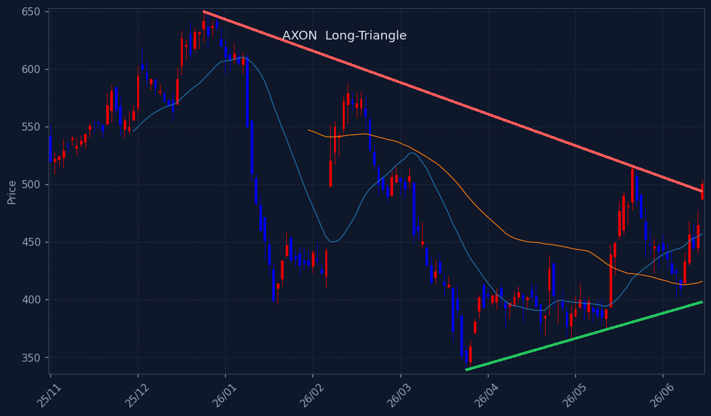
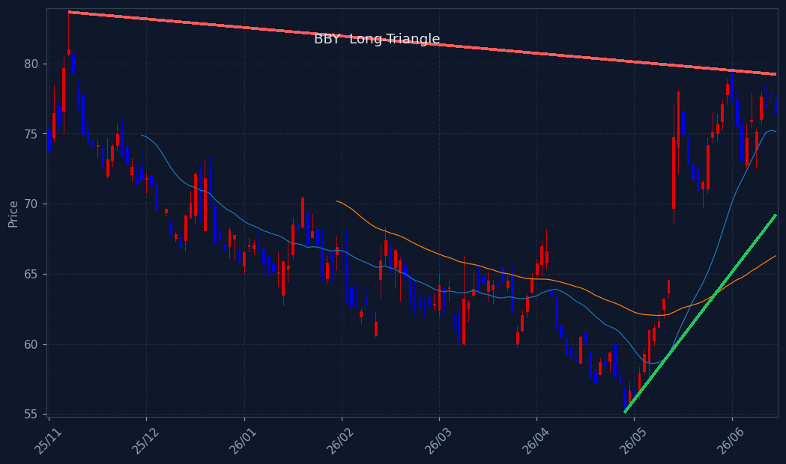
※ 삼각수렴 돌파 임박 종목. 📐장기 삼각수렴(수개월 대형 삼각형, 볼록껍질 추세선+실수축) = 백테스트 491건 승률 66%·평균 +8.7%/20일로 엣지 확인(HOOD·TSLA류 대박 초입). 단기 코일 = 엣지 약함(승률 ~60% 베타 수준). 🔻대칭=고점↓·저점↑ / 🟰바닥지지=저점 평평. 매수추천 아님·종합점수/Top3 미반영(관찰용).